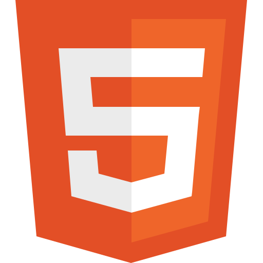
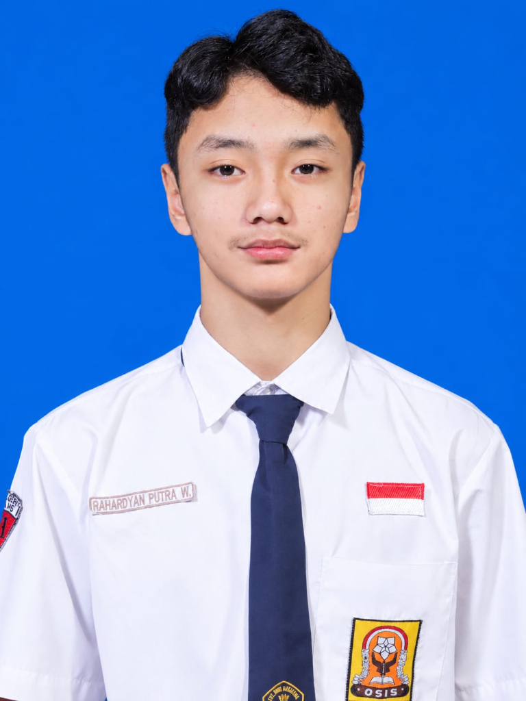
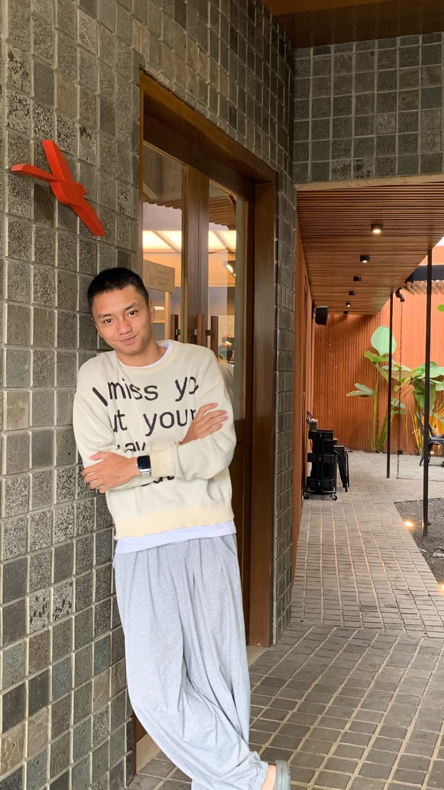
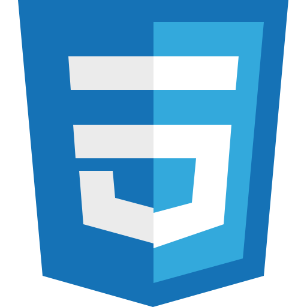
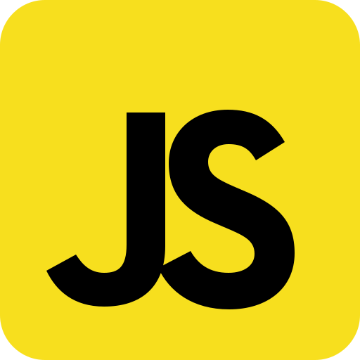

HTML
Web developmentLihat peran skill
Menyusun struktur dan konten halaman web agar rapi, jelas, dan mudah dipahami.
Rahardyan Putra Winata
MALANG, INDONESIASaya senang mencari tahu bagaimana sebuah website dibangun— mulai dari struktur hingga interaksi. Setiap latihan memberi saya ruang untuk mencoba, belajar dari proses, dan berkembang.


Saya adalah siswa kelas 11 jurusan Rekayasa Perangkat Lunak di SMK PGRI 03 Malang yang antusias mempelajari teknologi dan pengembangan web.
Saya sedang mengembangkan kemampuan dalam HTML, CSS, JavaScript, PHP, MySQL, Laravel, dan Canva. Saya juga senang berkolaborasi, berbicara di depan umum, serta mengatur waktu dengan baik sambil terus belajar lewat latihan dan projek.
Sedang mengeksplorasi dasar web, pemrograman, basis data, framework, dan desain visual.
Teknologi yang sedang saya pelajari dan gunakan.

Menyusun struktur dan konten halaman web agar rapi, jelas, dan mudah dipahami.

Mengatur tampilan, warna, tata letak, dan responsivitas halaman untuk berbagai ukuran layar.

Menambahkan logika dan interaksi agar halaman web terasa lebih hidup dan mudah digunakan.
Mempelajari pemrosesan di sisi server untuk mendukung fitur dan alur data pada website.
Mempelajari penyimpanan dan pengelolaan data terstruktur menggunakan basis data relasional.
Mengenal framework PHP untuk membantu menyusun aplikasi web dengan struktur yang teratur.
Membuat materi visual dan mengeksplorasi komposisi desain untuk kebutuhan digital.
Kebiasaan dan kemampuan yang membantu saya berkembang bersama orang lain.
Menyampaikan ide dan informasi dengan jelas, serta berlatih berbicara percaya diri di depan orang lain.
Mendengarkan masukan, berbagi tanggung jawab, dan saling membantu untuk mencapai tujuan bersama.
Menyusun prioritas dan membagi waktu agar tugas serta proses belajar dapat berjalan lebih teratur.
Ragam alat untuk eksplorasi kode, riset, dan prototipe—pilih yang paling sesuai dengan kebutuhan.
IDE dengan bantuan AI untuk menjelajah konteks proyek dan mendukung alur kerja coding.
Kunjungi toolRuang kerja berbasis browser untuk mencoba ide aplikasi dan membuat prototipe.
Kunjungi toolEksplorasi topik dan penelusuran informasi dengan rujukan yang bisa diperiksa.
Kunjungi toolEksperimen menyusun ide produk dan antarmuka melalui instruksi bahasa sehari-hari.
Kunjungi toolTempat mencoba dan mengiterasi prototipe web langsung dari browser.
Kunjungi toolEksplorasi fitur AI dalam ekosistem desain dan kolaborasi Figma.
Kunjungi toolDaftar ini adalah referensi tools untuk dieksplorasi, bukan klaim pengalaman atau tingkat keahlian.
Kumpulan ide latihan singkat dari teknologi yang sedang dipelajari. Pilih satu, kerjakan dengan ritme sendiri, lalu kembangkan sesuai kebutuhan.
Brief ini hanya titik awal. Bebas ubah tema, konten, dan pendekatan implementasinya.
Rancang kartu profil responsif yang menampilkan perkenalan singkat, minat, dan tautan penting dalam satu tampilan.
Kriteria selesaiInformasi mudah dipindai dan tata letak tetap nyaman dibaca di layar ponsel.
Ini adalah ide latihan, bukan daftar projek yang sudah selesai.
Jelajahi beberapa hal yang saya buat, pelajari, dan kembangkan.
Tekan / atau Ctrl + K untuk mencari.
Belum ada projek yang cocok. Coba kata kunci atau filter lain.
Game arcade sederhana bergaya Flappy Bird. Hindari pipa dan raih skor setinggi mungkin.
Aplikasi CRUD sederhana untuk mengelola data siswa dan nilai berbasis Laravel.
Website portofolio ini memperkenalkan profil, keterampilan, dan projek Rahardyan.
Ada pertanyaan, ide, atau ingin berdiskusi santai tentang web? Silakan pilih cara yang paling nyaman untuk menghubungi saya.
Untuk obrolan dan komunikasi langsung.
Temukan saya dan lihat aktivitas terbaru.
Untuk pesan dan keperluan yang lebih formal.
Lihat profil dan projek yang saya kerjakan.